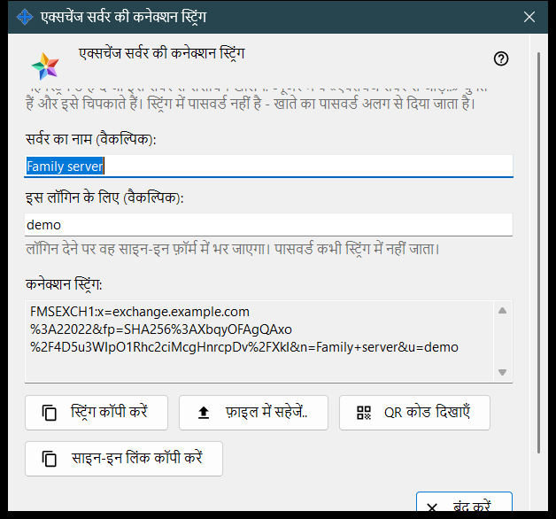
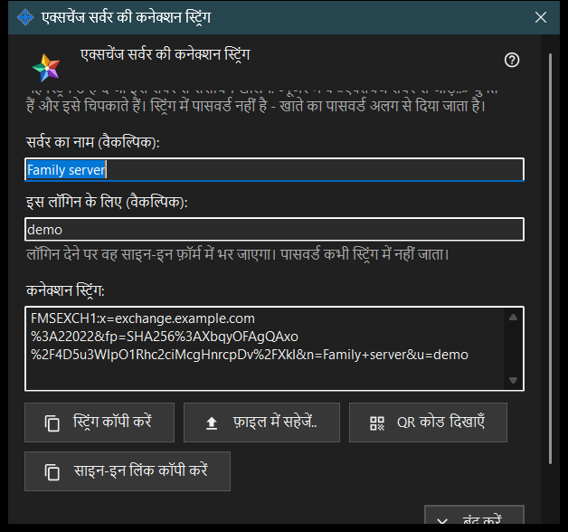

एक्सचेंज सर्वर की कनेक्शन स्ट्रिंग
यह किस लिए है
यह विंडो वह कनेक्शन स्ट्रिंग बनाती है जिससे दूसरे डिवाइस इस एक्सचेंज सर्वर को ढूँढते हैं और उसका प्रमाणपत्र जाँचते हैं। इसे एक्सचेंज सर्वर सेटिंग में, या सर्वर के पहली बार चलाने पर आने वाले स्वागत में, मौजूद बटन कनेक्शन स्ट्रिंग और QR कोड.. से खोलें। विंडो कोई सेटिंग नहीं बदलती।


इस क्रम में
- पक्का करें कि सर्वर के पास प्रमाणपत्र है और क्लाइंट के लिए पता तय है।
- विंडो खोलें: स्ट्रिंग तुरंत दिख जाती है।
- चाहें तो सर्वर का नाम और लॉगिन लिखें; आपके लिखना रोकने के कुछ क्षण बाद स्ट्रिंग फिर से बन जाती है।
- स्ट्रिंग कॉपी करें, उसे फ़ाइल में सहेजें, उसका QR कोड दिखाएँ या साइन-इन लिंक कॉपी करें।
- इसे दूसरे व्यक्ति को दें और खाते का पासवर्ड अलग से दें।
- बंद करें दबाएँ।
तत्व
बटन कब काम करता है
बटन कनेक्शन स्ट्रिंग और QR कोड.. तभी चालू होता है जब सर्वर के पास प्रमाणपत्र हो और क्लाइंट के लिए पता तय हो। पता खाली हो तो बटन बंद रहता है और उसके नीचे का संकेत कहता है: पहले क्लाइंट के लिए पता तय करें: उसके बिना कनेक्शन स्ट्रिंग नहीं बन सकती। विंडो के अंदर, जब तक स्ट्रिंग नहीं है, बटन बंद रहते हैं।
सर्वर का नाम और लॉगिन
फ़ील्ड सर्वर का नाम (वैकल्पिक): अधिकतम 64 अक्षर लेता है और स्ट्रिंग में सर्वर के नाम के रूप में रखा जाता है। फ़ील्ड इस लॉगिन के लिए (वैकल्पिक): 3 से 64 अक्षर लेता है (a-z, 0-9, बिंदु, अंडरस्कोर, हाइफ़न) और उस डिवाइस के साइन-इन फ़ॉर्म में भर जाता है जो स्ट्रिंग का उपयोग करता है। पासवर्ड कभी स्ट्रिंग में नहीं जाता।
कनेक्शन स्ट्रिंग
कनेक्शन स्ट्रिंग: केवल पढ़ने वाला बॉक्स है जो नतीजा दिखाता है: क्लाइंट के लिए पता, प्रमाणपत्र का फ़िंगरप्रिंट, और यदि लिखे हों तो नाम और लॉगिन। स्ट्रिंग पाने वाला डिवाइस उसमें दिए फ़िंगरप्रिंट पर भरोसा करता है, इसलिए उसे हाथ से मिलाने की ज़रूरत नहीं है।
कॉपी करना और सहेजना
बटन स्ट्रिंग कॉपी करें स्ट्रिंग को सामान्य टेक्स्ट के रूप में क्लिपबोर्ड पर रखता है, क्योंकि वह गुप्त नहीं है; नीचे की पंक्ति में दिखता है: स्ट्रिंग कॉपी हो गई। बटन फ़ाइल में सहेजें.. एक .fmsexch टेक्स्ट फ़ाइल लिखता है (सुझाया गया नाम exchange-server.fmsexch) और उसका पथ दिखाता है; दूसरा डिवाइस उसे अपनी एक्सचेंज खाता विंडो में बटन फ़ाइल खोलें.. से पढ़ता है। क्लिपबोर्ड व्यस्त हो या फ़ाइल न लिखी जा सके, तो एक पंक्ति यह बताती है।
QR कोड और साइन-इन लिंक
बटन QR कोड दिखाएँ उसी स्ट्रिंग की स्कैन करने के लिए एक तस्वीर खोलता है; वह एक सर्वर का नाम बताती है और किसी चीज़ तक पहुँच नहीं देती। बटन साइन-इन लिंक कॉपी करें तभी दिखता है जब यह सर्वर वेब क्लाइंट उपलब्ध कराता हो; वह उसी स्ट्रिंग वाला ब्राउज़र लिंक कॉपी करता है।
जब स्ट्रिंग न बन सके
चेतावनी के रंग की एक पंक्ति कारण बताती है: नाम या लॉगिन तय सीमा से बाहर है; सर्वर के पास प्रमाणपत्र नहीं है (सर्वर को एक बार चालू करें); या एक्सचेंज सर्वर ने उत्तर नहीं दिया। कारण दूर करें तो स्ट्रिंग फिर से बन जाती है। बटन बंद करें विंडो को समाप्त करता है; नाम और लॉगिन सहेजे नहीं जाते।
प्रबंधक सेटिंग · SFTP साझाकरण सेटिंग · एक्सचेंज सर्वर सेटिंग